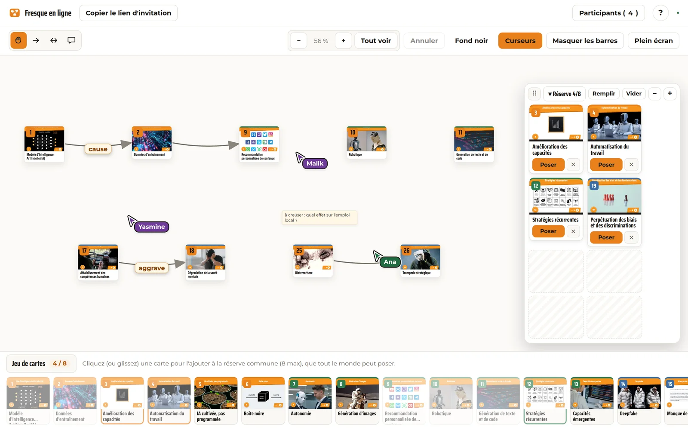

La fresque, à distance, sur un tableau partagé
Un atelier de la Fresque des risques de l'IA joué dans le navigateur, à plusieurs, en même temps. Une personne anime, jusqu'à huit participant·es posent les cartes et tracent les liens ensemble. Rien à installer, aucun compte à créer.
Vous avez reçu un lien par e-mail ? Ouvrez votre session.

Ce que ça change
L'atelier garde exactement le même déroulé qu'autour d'une table. C'est la distance qui disparaît, pas la discussion.
Tout le monde voit tout, tout de suite
Une carte posée, une flèche tracée, une note écrite apparaissent chez les autres en quelques dizaines de millisecondes. On voit même les cartes glisser pendant qu'une autre personne les déplace, et son curseur se promener sur le tableau.
Rien à installer, rien à créer
Un navigateur récent suffit, sur ordinateur ou tablette. Pas de logiciel, pas de compte, pas de mot de passe : le lien reçu par e-mail ouvre directement la bonne session, avec votre prénom.
La fresque repart avec le groupe
En fin d'atelier, l'animateur·ice télécharge l'image de la fresque terminée, cartes, liens et annotations compris. De quoi la partager, la commenter ou la reprendre plus tard.
Le déroulé
Comment ça se passe
- 1
On programme l'atelier
Date, heure, nombre de places, public ou privé. Vous recevez un e-mail avec tous vos liens : celui à diffuser pour les inscriptions, celui qui ouvre votre session le jour J, et celui pour déplacer ou annuler. Aucun code à noter.
- 2
Les participant·es s'inscrivent
Chacun·e reçoit son propre lien par e-mail, plus un rappel la veille et une heure avant. Le jour J, un clic suffit : pas de code à recopier, pas de compte à créer.
- 3
On construit la fresque ensemble
L'animateur·ice met des cartes à disposition dans la réserve commune. Chacun·e les pose sur le tableau, les relie, annote les liens, ajoute des notes, pendant que le groupe discute en visio.
Et pour la discussion ?
Un atelier programmé avec la visio intégrée ouvre un salon sur notre propre instance de Jitsi Meet, un logiciel libre que nous hébergeons nous-mêmes : pas de compte, pas de service d'un grand groupe, pas de pistage, et un lien unique effacé après l'atelier. Le lien apparaît dans le tableau, à portée de clic.
Vous préférez votre propre outil (Discord, Google Meet, Teams…) ? Collez simplement son lien à la place.
Ce que l'outil sait faire
- Poser et relier
Cartes glissées depuis la réserve ou posées d'un clic, liens simples ou à double sens, annotés d'un mot (« cause », « aggrave »…), notes libres à poser n'importe où.
- À plusieurs, vraiment
Curseurs de chacun·e, cartes qui glissent en direct pendant qu'on les déplace, texte qui apparaît pendant la frappe. Personne n'attend son tour.
- Se repérer
Zoom à la molette, au pincement ou aux boutons, « Tout voir » pour tout recadrer d'un clic, plein écran, fond clair ou sombre. En prenant du recul, les cartes laissent la place à leur numéro et à la couleur de leur famille, et les liens restent bien visibles : une fresque de trente-huit cartes se lit d'un coup d'œil.
- Revenir en arrière
Un raccourci (Ctrl+Z) ou un bouton défait votre dernière action : une carte retirée par erreur, un lien de trop.
- Sans souris
Tout le tableau se pilote au clavier : flèches pour circuler entre les cartes, Maj + flèches pour en déplacer une, L pour relier, Entrée pour ouvrir.
- Mouvement réduit
Si votre système demande moins d'animations, le tableau les supprime : rien ne bouge sans raison, tout reste utilisable.
- L'image finale
Un bouton télécharge la fresque terminée en image, prête à partager.
Questions pratiques
De quoi ai-je besoin pour participer ?
D'un ordinateur ou d'une tablette, d'un navigateur récent (Firefox, Chrome, Edge, Safari) et d'une connexion ordinaire. Le lien reçu par e-mail fait le reste. Sur téléphone, l'écran est vraiment petit pour un tableau de trente-huit cartes : nous le déconseillons.
Combien de personnes ?
Une personne anime et jusqu'à huit participent, comme autour d'une table. C'est le format qui laisse à chacun·e le temps de parler.
Combien de temps ?
Comptez trois heures, comme en présentiel : une heure et demie pour construire la fresque, puis la discussion. Le guide de l'animateur·ice détaille le déroulé.
Et si ma connexion coupe ?
Rouvrez le lien : vous retrouvez votre place et le tableau tel qu'il est. Rien n'est perdu, la fresque vit sur le serveur et pas dans votre navigateur.
Quelles données ?
Pour le tableau, seul votre prénom est utilisé, le temps de l'atelier ; les sessions sont effacées automatiquement après quelques heures d'inactivité. L'inscription à un atelier programmé utilise votre e-mail, conservé par Pause IA pour la gestion de l'atelier et effaçable sur simple demande. Détails dans les mentions légales.
Combien ça coûte ?
Rien. L'outil est gratuit et libre, sans publicité et sans pistage. Il est porté par Pause IA, association à but non lucratif.
Un souci, une idée ?
L'outil est jeune et nous le faisons évoluer au fil des ateliers : écrivez-nous, les retours des animateur·ices sont ce qui le fait avancer.
Réunissez un groupe
Programmez votre atelier en ligne en deux minutes, ou inscrivez-vous à l'un de ceux déjà ouverts.
Vous préférez le présentiel ? Téléchargez les cartes et réunissez un groupe autour d'une table.